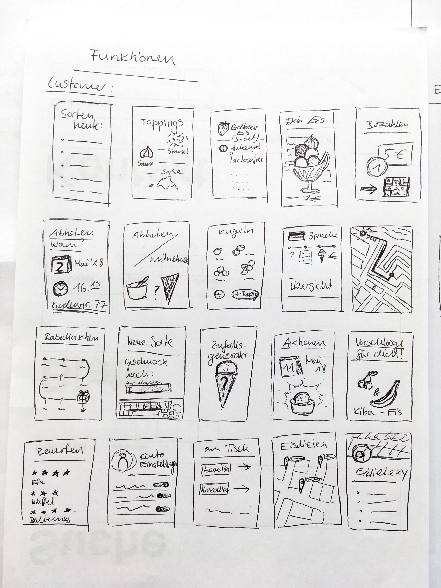
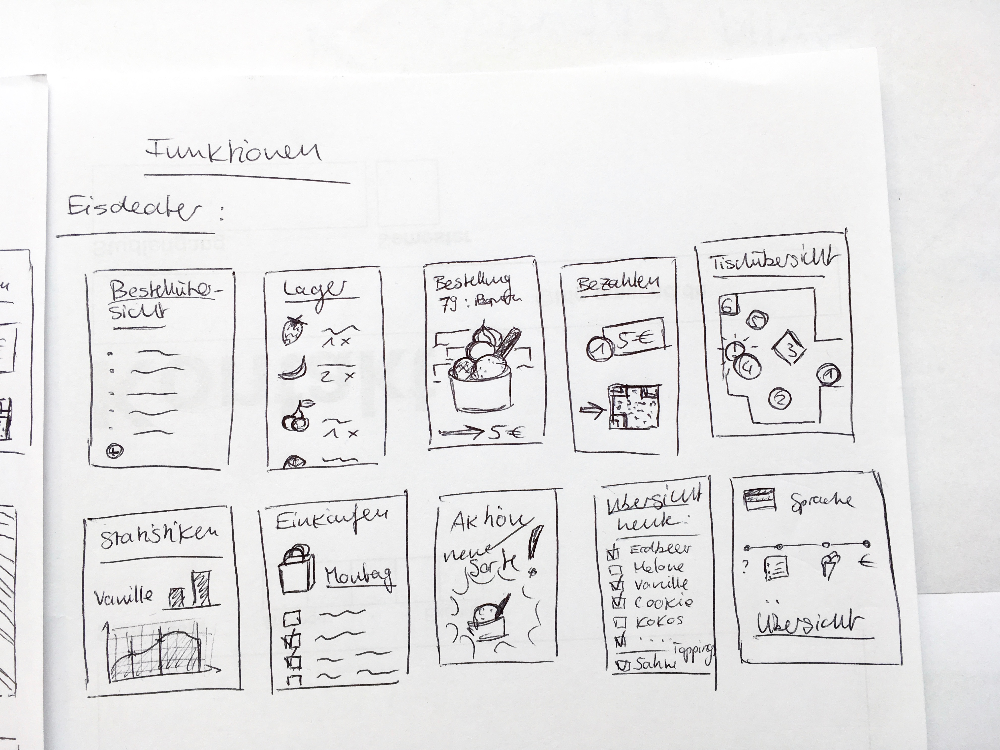

Bevor wir uns an die Ausarbeitung und Gestaltung eines ersten Prototypen machten, zeichneten wir Scribbles
zu den unterschiedlichen Screens und sammelten Ideen was darauf zu sehen sein könnte und welche Funktionen in welchem
Umfang in der unserer Anwendung enthalten sein könnten. Diese Scribbles dienten uns auch später noch als Übersicht was
ursprunglich geplant war und bot eine gute visuelle Übersicht der diversen Ideen.
KUNDE

Bei den ersten Scribbles für den Kunden versuchten wir alle wichtige Schritte eines Bestellvorgangs in Screens aufzuteilen
und darüber nach zu denken welche es denn überhaupt gibt und welche Informationen beim Bestellen wichtig sind.
Damit die Anwenundung persönlich wirkt und wie beim Eiskauf noch den "persönlichen" Kontakt zum Verkäufer
gibt sammelten wir auch verschiedenste Ideen wie man dies innerhalb einer Anwendung umsetzen könnte. Von einem eigenen Profil,
Rabattaktionen, Benachrichtigungen bei neuen Eissorten, bis hin zu Bewertungen durch den Kunden, welche Kritik, Lob und Anreize für Neues
enthalten können.
Aber nicht nur Zusatzfunktionen waren in der Diskusion, sondern auch essentielle Screens, wie eine Karte mit Eisdielen-Finder
und einer Ansicht, welche Eissorten es bei einer Eisdiele an dem jeweiligen Tag gibt.
ICE-CREAMIST

Für die Scribbles des Ice-Creamisten orientierten wir uns an den unterschiedlichen Aufgaben, die
bei einem Speiseeishersteller über den Tag verteilt anfallen.
Begonnen bei der Planung der Herstellung, Verwaltung der Rezepte, Iventur des Lagers,
sowie die generierung der Einkaufsliste durch Erfassung des, Verkauf, samt der Beliebtesten Sorten und Statistiken.
Ja nach Eisdielen-Art waren auch mal Screens zur Tischplanung und Organisieren der Bestellungen an Sitzplätzen angedacht.